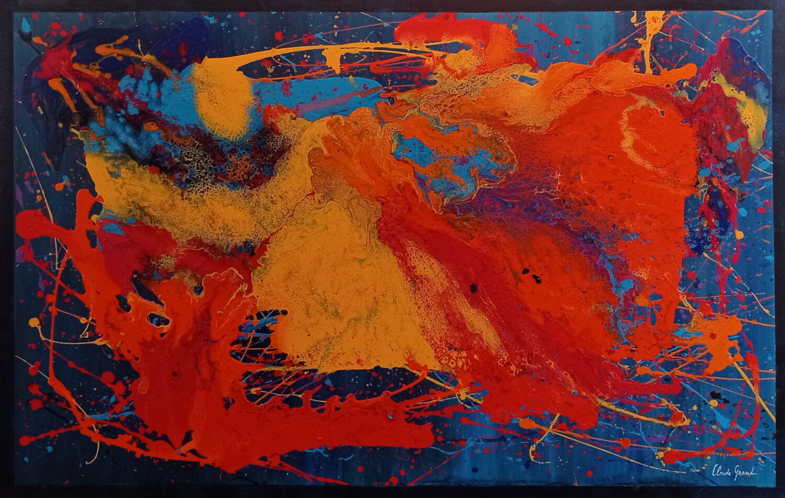
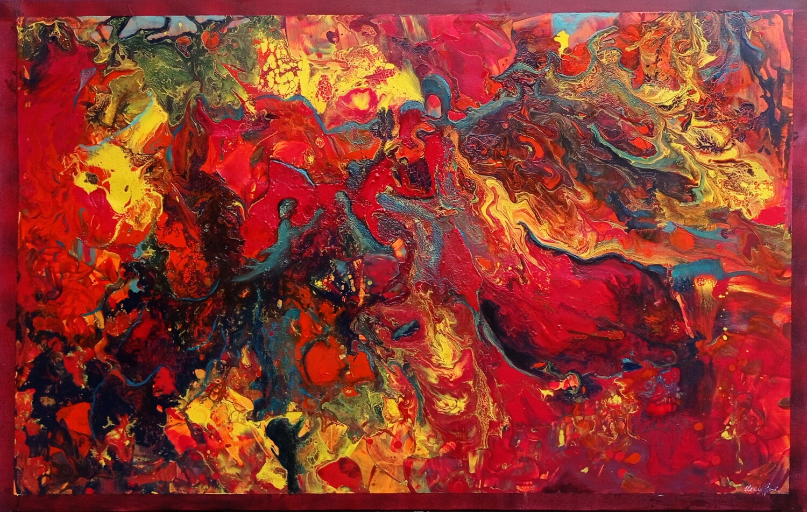
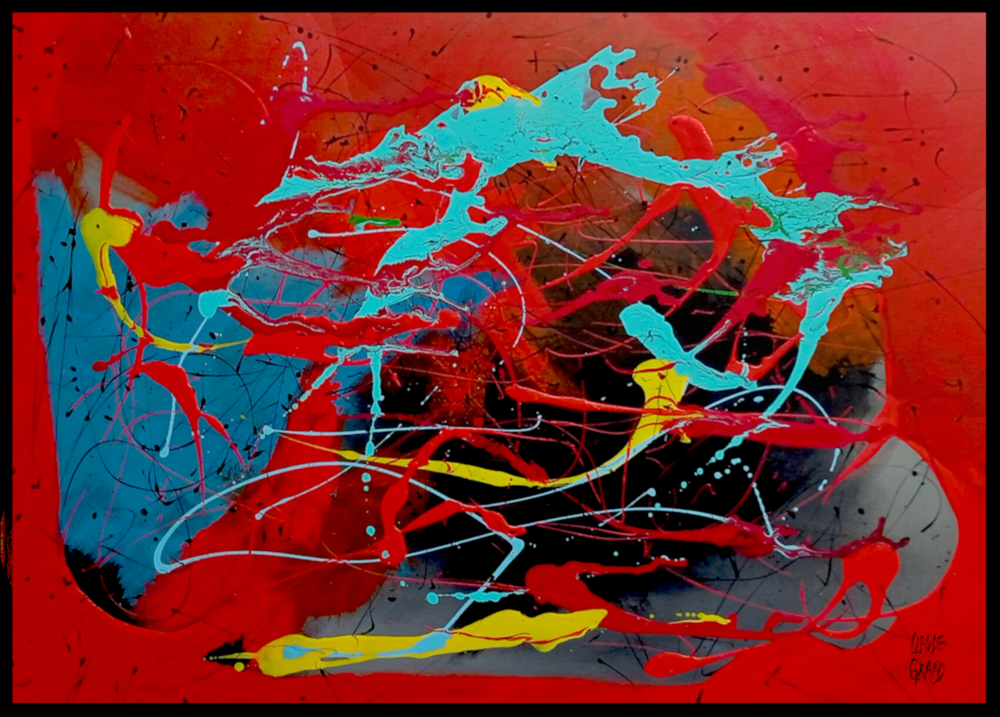

Les Abstraits

Amadéus
Technique : Acrylique sur papier
Dimensions : 120 x 80 cm
Des torrents de feu et d’azur jaillissent dans un même souffle. La couleur explose, libre et sauvage, comme une énergie impossible à contenir.

Ange bleu
Technique : Acrylique sur toile
Dimensions : 130 x 90 cm
Des courants de lumière et de lave traversent la toile dans une danse sauvage. La couleur devient souffle, tempête et naissance d’un monde incandescent.

L’arbre des fées
Technique : Acrylique sur toile
Dimensions : 130 x 90 cm
Dans une pluie d’éclats et de couleurs, l’arbre déploie ses branches comme des veines de lumière reliant la terre aux songes invisibles.

Ballade 1
Technique : Acrylique sur toile
Dimensions : 50 x 70 cm
Des formes anciennes émergent de la pénombre comme des fragments de mémoire. La lumière ocre réchauffe doucement ce monde immobile et mystérieux.

Ballade 2
Technique : Acrylique sur toile
Dimensions : 50 x 70 cm
Des fragments de lumière et de matière s’équilibrent dans un silence profond. L’ocre et le rouge semblent garder la chaleur secrète d’un paysage oublié.

Exclamation
Technique : Acrylique sur toile
Dimensions : 75 x 110 cm
Des masses sombres et lumineuses se frôlent dans une tension silencieuse. Le rouge éclaire l’espace comme une présence vive au cœur de l’ombre.

La mélancolie
Technique : Acrylique sur toile
Dimensions : 75 x 110 cm
Sous un soleil immobile, les formes dressées veillent dans le silence. Les rouges profonds et les matières usées racontent la mémoire d’une cité intérieure.

Mélancolie 2
Technique : Acrylique sur toile
Dimensions : 75 x 110 cm
Sous un soleil blessé, les formes s’élèvent dans une pluie de matières et d’éclats. Le rouge consume lentement le silence d’une ville intérieure.

Nu 7
Technique : Acrylique sur toile
Dimensions : 75 x 110 cm
Courbes douces et lumière fragile dessinent une présence intime. Dans les rouges profonds du fond, le corps semble flotter entre force et abandon.

Présence verticale
Technique : Acrylique sur toile
Dimensions : 75 x 110 cm
Une forme obscure traverse la lumière comme une apparition silencieuse. Le rouge et l’or vibrent ensemble dans une tension lente et presque sacrée.

Vivalova
Technique : Acrylique sur toile
Dimensions : 80 x 120 cm
Des éclats de couleurs s’entrechoquent dans une course libre et instinctive. La toile devient mouvement, vibration et énergie suspendue dans le rouge incandescent.

Voxys
Technique : Acrylique sur toile
Dimensions : 80 x 120 cm
Des signes noirs traversent l’espace comme des fragments d’écriture oubliée. Quelques éclats rouges et or rallument la mémoire secrète du chaos.